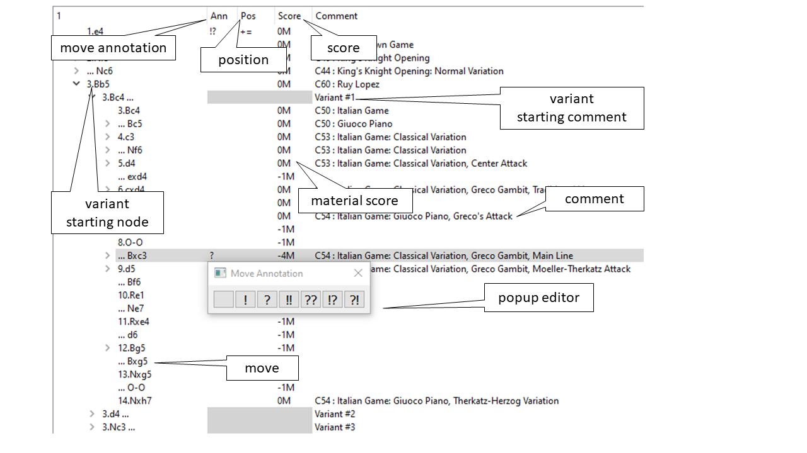

Game Editor
The game editor is based on Qt’s QTreeWidget.
 It has 2 types of lines:
{kind=link}
regular moves where all columns have a white background
beginning of a variant where the middle columns have a grey background
The tree widget has 4 colums:
Move shows the actual move or the beginning of a variant in SAN notation
Ann shows the annotation, i.e. a symbolic move assessment
Pos shows the position assessment
Score shows the engine or material score of the last move in pawns, material score ending with M
Comment shows either the move comment or starting comment of a variant
By clicking the annotation (Ann) and position assessment (Pos) fields, a popup dialog opens which allows to change the contents
- class gametreeview.GameTreeView(parent=None)[source]
Game Editor object
- addGameNodes(gameNode: GameNode, parentItem: Optional[QTreeWidgetItem] = None) None[source]
Adds 1 or more nodes, parent node of first node must exist in the editor
- Parameters
gameNode – game node to be added (must be main_variation !!)
parentItem – parent item of the gameNode (used only for internal use)
- addVariant(gameNode: GameNode) None[source]
Adds a new variant, parent node must exist in the editor
- Parameters
gameNode – game node to be added (must not be main_variation !!)
- promoteVariant2Main() bool[source]
Promote variant to main line, if currently selected item is a variant
- selectNodeItem(gameNode: GameNode) None[source]
Selects a game node
- Parameters
gameNode – game node to be selected
- selectSubnodeItem(gameNode: GameNode, next: bool = True)[source]
Selects the next or previous variant
- Parameters
gameNode – reference game node
next – if True select the next variant, else select previous variant
- setGame(game: Game) None[source]
Clears the editor and sets new game
- Parameters
game – game to be set
- setGameResult(result: str) None[source]
Sets the ‘Result’ header element
- Parameters
result – one out of 1-0, 0-1, 1/2-1/2, *
- setup(notifyGameNodeSelectedSignal: Optional[pyqtSignal], notifyGameChangedSignal: Optional[pyqtSignal]) None[source]
Set up of the game editor
- Parameters
notifyGameNodeSelectedSignal – signal to be emitted if a game node is selected
notifyGameChangedSignal – signal to be emitted if the loaded game is changed